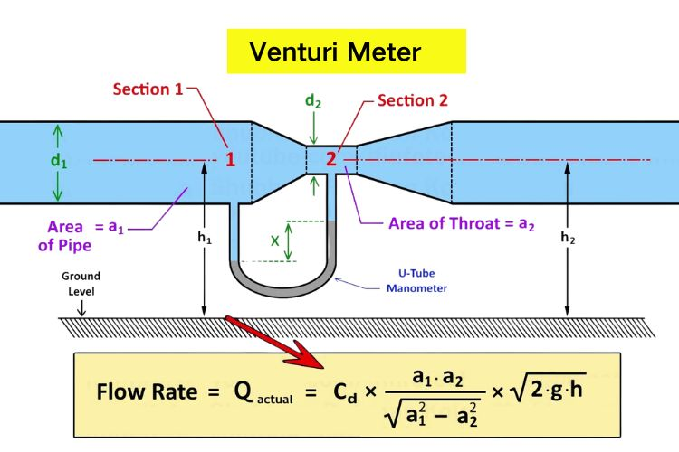

The purpose of this assignment is to use a plotting library, chart.js

The modified equation charted below, having converted to a form using the density of the fluid (rho, p) and assuming equal height of inlet and outlet comes from the flow rate equation: Q=CA2sqrt{2(P1-P2)/p[1-(A2/A1)2]}, and after alteration becomes: (P1-P2)={pQ2[1-(A2/A1)2]}/{2C2A22} also charted is the same flow rate and inlet pipe, but with a throat diameter 20% smaller.